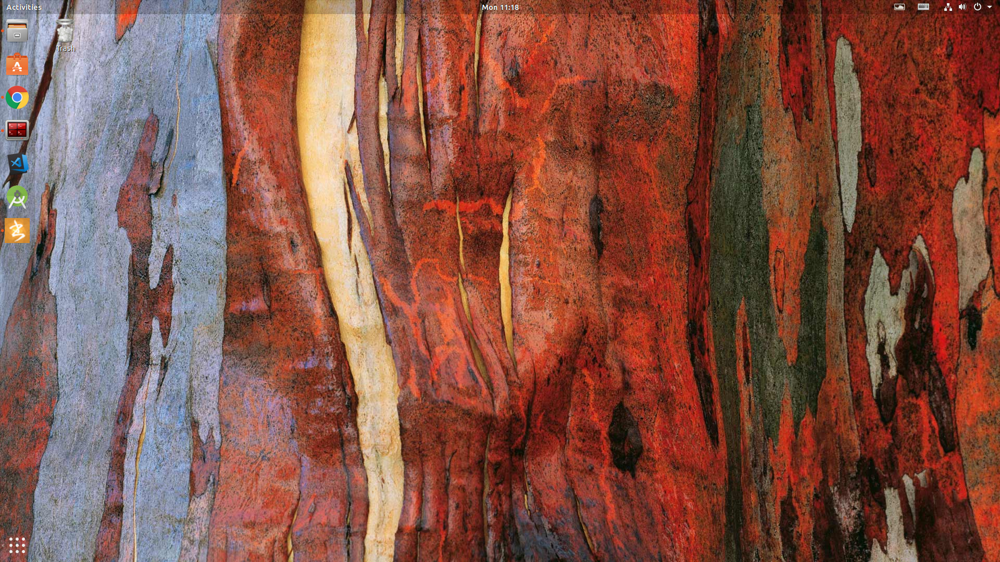
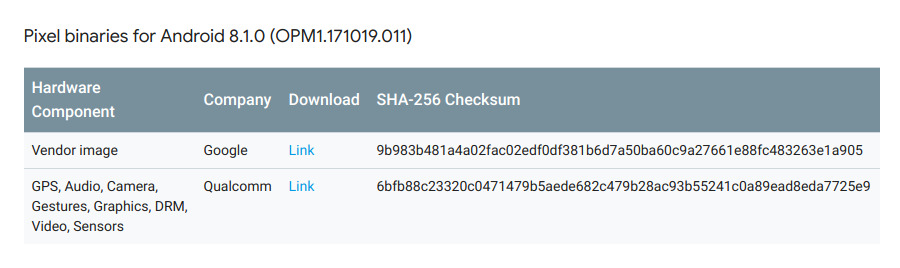
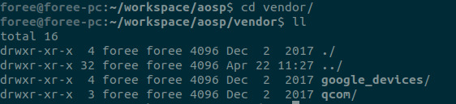
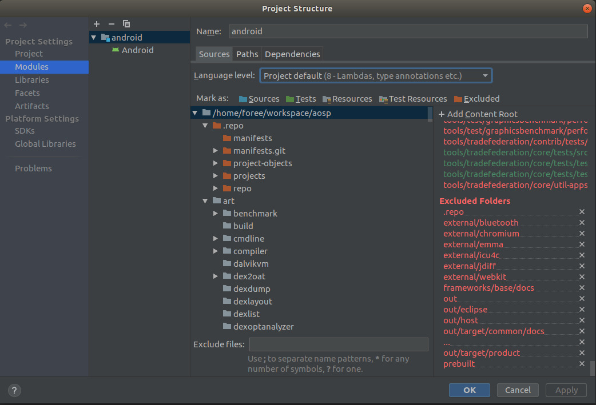
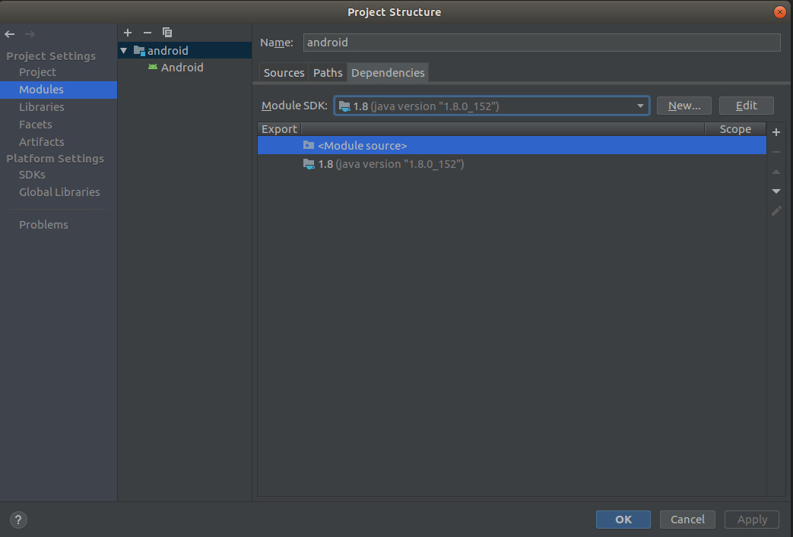

写在开头
最近在公司遇到的很多问题都是通过翻看 Android 源码来解决的，例如
- 竖向 ListView 和内嵌的横向 RecyclerView 的滑动冲突事件处理
- 弹框内嵌 ListView 之后，弹框定向高度的计算
- 处理 TextView 换行之后的文本所剩余的空白区域仍然可以点击的问题
- ……
实际解决这些问题的过程中，单纯依靠看源码很难定位到问题，那么断点调试就成了最有效的方法。然而，在现实环境中，还面临着一个不可跨越的鸿沟，国内手机大多数都是基于 Android 源码进行了定制，这部分代码是不开源的，而我们日常调试都是基于 Android 的标准源码，那么，代码行数无法准确匹配就成了最大的问题，这就是我要做这件事情的初衷。
正文
要解决这个问题，我们就需要一个运行开源 Android 系统的手机。毫无疑问，Nexus 和 Pixel 系列就是我们最好的选择
调试手机选择
Android 源码截止发文之前已更新到 Android10 预览版，为了不至于太过时，我们就以最低可运行 Android8.1.0 作为基本条件
我们将目光限定在这几款机型上
支持到 8.1.0 的手机有
- Nexus 5X
- Nexus 6P
- Pixel C
支持到9.0的手机有（最新支持 10.0 系统）
- Pixel
- Pixel XL
- Pixel 2
- Pixel 2 XL
- Pixel 3
- Pixel 3 XL
毫无疑问，Pixel，是最具性价比的选择（可以去咸鱼淘一淘）
准备好手机之后，我们就需要开始搭建编译 Android 源码的环境
操作系统
操作系统也是我们的考虑之一（当然这里说的操作系统是类 Unix 系统），毕竟我们主要的目的是翻看源码，调试源码，一个稳定好用美观简洁的操作系统会减少我们在前期准备上和后期使用上的成本。
一开始我选择了 Manjaro，后来放弃的原因是因为搜狗输入法的最新版总是安装不上去，不断崩溃，导致输入中文的体验极差，广搜无果，另外 Manjaro 的系统的美观度又不是很满足我的要求，自己定制又要花不少时间，实在折腾不动了。
后来又想到了黑苹果，Macos 在 Android 源码编译的支持上还不错，系统美观和软件适配程度也不在话下， 于是花了两天时间搞定了大多数的驱动，终于可以跑起来了，却因为贫穷再次放弃了，因为 Macos 只有在高分屏下显示效果才能最大发挥，家里台式机只有一个 1080p 的屏幕，安装完成之后字体发虚，长时间盯着屏幕会眼花，所以只能再次格掉硬盘
兜了这么一大圈，最终将目光投向 Ubuntu，上一次使用还是大学时代，在软件依赖处理上吃过不少苦头，不过我们这次的要求很简单，不会有乱七八糟的定制，只将目标聚焦于 Android 源码编译和日常软件。
时隔几年没想到 Ubuntu 变化挺快，流畅度和美观度都有所改观，以下是 Ubuntu 18.10 版本的截图

备注：各个平台制作镜像工具
Windows 使用 UlrtraISO 制作镜像
Mac 使用 Ethcer 制作镜像
Linux 使用 Woeusb 制作 Windows 镜像，使用 dd 命令直接制作 Linux 镜像
基本软件
- Jdk8：重要性不言而喻
- 搜狗输入法：必不可少，中文输入体验提升一大截
- AndroidStudio：查看 Android 源码利器（只限于 Framework 层，Native 层推荐 SourceInsight）
- Visual Studio Code：查看一些非 Android 代码，全局搜索还是很给力的，管理工程目录也很方便
- 小书匠 Markdown 编辑器：很良心的一款软件，支持三平台，支持和印象笔记同步，我都是在这里写完文章同步到印象笔记中的，算是 Linux 下印象笔记的替代品吧
- Terminator： 多分屏的终端，不同打开多个终端后找不到刚开始的任务在哪里了
- StarUML：画类图和流程图的工具，也是三平台支持
搞定操作系统，搞定基本软件安装，接下来我们就开始下载 Android 源码和搭建源码编译环境
下载源代码
我们先来下载源码，因为源码比较庞大，所以预先准备一下，整个过程可以参考 清华大学镜像站 提供的帮助文档。
整体来说，推荐使用压缩包的方式，下载过程异常会更少，速度也会更快
下载 repo
1 | mkdir ~/bin |
没有梯子时可以使用清华大学提供的 repo1
2curl https://mirrors.tuna.tsinghua.edu.cn/git/git-repo > ~/bin/repo
chmod a+x ~/bin/repo
备注：
repo 必须运行在 python-2.7 的环境，可以使用 python virtual 的技术组建当前环境，实现 python-3 和 python-2 的自由切换
下载源码包
1 | axel -n 10 https://mirrors.tuna.tsinghua.edu.cn/aosp-monthly/aosp-latest.tar # 下载初始化包 |
注意，以上代码会同步到 Android 源码的主分支的最新代码，如果想要单独切换到某个版本（或某个tag），执行以下操作
1 | cd AOSP |
当然，也可以直接切换分支1
2
3
4cd AOSP
cd .repo/manifests
git checkout -b android-8.1.0_r1 origin/android-8.1.0_r1
repo sync -c
备注：
直接使用repo下载时，推荐使用北京大学开源镜像站下载，速度会快一点，下载过程会多次停止，可以使用脚本来处理继续下载，下载预计耗时 2 天
搭建 Android 源码编译环境
我们这次安装的是 Ubuntu 18.10，所以直接安装以下软件即可：1
sudo apt-get install git-core gnupg flex bison gperf build-essential zip curl zlib1g-dev gcc-multilib g++-multilib libc6-dev-i386 lib32ncurses5-dev x11proto-core-dev libx11-dev lib32z-dev libgl1-mesa-dev libxml2-utils xsltproc unzip
也可以直接参考以下链接：
Android 官方网站-搭建编译环境
准备编译
因为 Android 源码中未携带相关设备的厂商私有代码（通常是二进制，不开源的），所以还需要在编译之前下载好指定机型，指定 Android 版本的厂商二进制文件。
在厂商二进制文件中找到对应机型，对应 Android 版本，下载完成后，在源码目录解压，然后运行每个压缩包中的可执行文件即可。
我们以 Pixel 手机，Android8.1.0 版本举例
打开厂商二进制文件，找到如下位置

下载完成拿到两个压缩文件之后，全部解压会得到两个可执行文件
然后打开源码根目录，分别执行可执行文件，会在 vendor 目录看到以下两个目录，表示执行完成

接下来就是熟悉的三连发，预计两小时，坐等编译完成
1 | cd AOSP |
也可以参考以下链接
Android 官方网站-准备编译
备注：https://developers.google.cn/android/blobs-preview 指向的是最新的厂商二进制文件，对应于 AOSP 上的 master 分支，如果直接使用这些文件编译旧 Android 版本，可能会导致无法开机
刷入自制 Rom
如果你的手机之前没有刷过机，那么手机首先要 oem 解锁，才能使用 fastboot 命令，同样，使用 Pixel 为例
oem 解锁
1 | adb reboot bootloader |
刷机
然后在编译完成的out目录下，使用 fastboot flashall 刷机即可，也可以单独刷某个系统镜像
调试系统源码
要调试系统源码，我们需要将 aosp 源码导入 AndroidStudio 中，有一些技巧可以分享
生成索引
首先，Android 源码提供了直接生成 ide 可识别的文件的工具，在编译完成 Android 源码之后
1 | cd AOSP |
运行完成后就会在源码根目录生成一个 android.ipr ，这个文件是可以直接被 AndroidStudio 识别的，我们用 AndroidStudio 打开它，这个时候 AndroidStudio 会根据这个文件所生成的目录结构对所有文件做一个索引，这个索引会比较慢，请耐心等候
备注：固态硬盘相比普通的机械硬盘在生成索引上有巨大性能差异，可以择优而取
调整系统依赖项
在生成完索引之后，我们要调整一下 AndroidStudio 监视源代码的目录，像如 out 这样的目录，每次编译完成都会产生变化，而我们又基本不会用到这个目录，所以直接去掉索引即可，当然你也可以选择其他不需要的目录做处理。
以 out 目录为例，打开 File -> Project Structure，将 out 目录 Excluded 掉即可

同样，为了减少 Android SDK中附带的源码和其他模块对我们自身源码的干扰

将 ModuleSDK 配置为 jdk1.8 而不是某个 sdk 版本，不然后续源码跳转，会很奇怪的跳到 sdk 源码中去
然后将除 jdk 和 Module source 这两个模块以外的其他的模块都删除，我们统一使用 Android 自带源码索引跳转即可
备注：墙内如何愉快的下载 Android SDK 工具包
谷歌在国内有服务器，用 ping.chinaz.com 解析出 dl.google.com 最快的 ip，加入到 hosts 中，即可直接满速下载
编译单独模块
编译单独模块主要使用以下两个命令
mm在当前模块目录下编译生效mmm指定某个模块的目录编译生效
例如之前的
1 | mmm ./development/tools/idegen |
等效于
1 | cd ./development/tools/idegen |
同理对于 framework 与 service 等模块，我们可以编译想要的 framework.jar，services.jar，ext.jar等核心包，然后 push 到手机的对应位置皆可实现源码调试。
写在后边
从开始搭建到最后的搭建完成还是很耗时间的，大概花费了三周的时间，期间一直在加班，只能抽空周末搞一搞。
在这三周的时间中，在各个系统切换花费了一大半时间，最后还是选择了 Ubuntu，不论是从 Android 官方还有 Sogou 官方支持来看，还是从开箱即用的理念上来讲，Ubuntu 确实是一个不错的选择。
如果你还是学生，有大把的时间用来学习研究，那么类似 ArchLinux，Gentoo 都是很好的选择，安装的过程中都可以学到很多新的东西，如果你是一个上班族，那么 Ubuntu 是你最好的选择，可以省却很多系统配置的时间，将大部分精力用在学习专业的知识上，Android 已经不像当年那么火热，市场上缺少的是真正高精尖的人才，在某个方向上纵深发展，才是更好的选择。